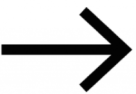
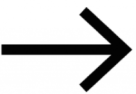

Өмнөх сэдэв

Функц гэж юу вэ ?
Дараах бодлого
Математик дээр хамгийн их өргөн хэрэглэгддэг үгнүүдийн нэг бол функц мөн. Тэгвэл функц гэж яг юу юм бэ ?
Функц гэдэг нь 2 тооны харилцах хоорондын хамаарал юм.
Гэсэн тайлбар байдаг ч үүнийг арай илүү энгийнээр ярилцая.
Функц гэдэг нь өөрөөр хэлэх юм бол автомат ундааны машинтай ижил юм.Функц
Функц гэдэг бол ундааны машин ?
За тэгвэл ундааны машинаас ундаа авахдаа хамгийн түрүүнд юу хийх бол ?
Тийм ээ , эхлээд бид мөнгө өө хийнэ.
 

Харин мөнгө өө хиисэний дараа ямар үйлдэл явагдах вэ ?
Оруулсан мөнгөн дүнгээс хамаарч ундаа гарч ирнэ.
Өөрөөр хэлвэл , ундааны машины дотор болж буй процесс нь мөнгийг ундаа болгож сольж байна.
Үүнээс үзэхэд , ундааны машинд функцийн нэг шинж чанар агуулагдаж байна
Энэ нь оруулсан мөнгөн дүнгээс хамаарч гарж ирэх зүйл нь ялгаатай байна.Жишээлбэл , 1500 төгрөгий жүржийн жүүс авлаа гэж бодоход жүржийн жүүс л гарж ирнэ. Харин 2000 төгрөгний үнэтэй хийжүүлсэн ундаа авахад хийжүүлсэн ундаа л гарж ирнэ.
Функц нь үүнтэй яг л адилхан юм.
Аливаа функцид А гэсэн утга оруулахад В гэсэн утга гарна. Функцид юу оруулахаас хамаарж юу гарж ирэх нь шийдэгдэнэ гэсэн үг.Мөн функцид оруулж байгаа утагийг х-ээр , харин гарж ирэх утагийг у-ээр тэмдэглэдэг байна.
За одоо жишээн дээр харж үзье.
Харин одоо баруун талын график дээр хүссэн функцээ зурж үзээрэй.